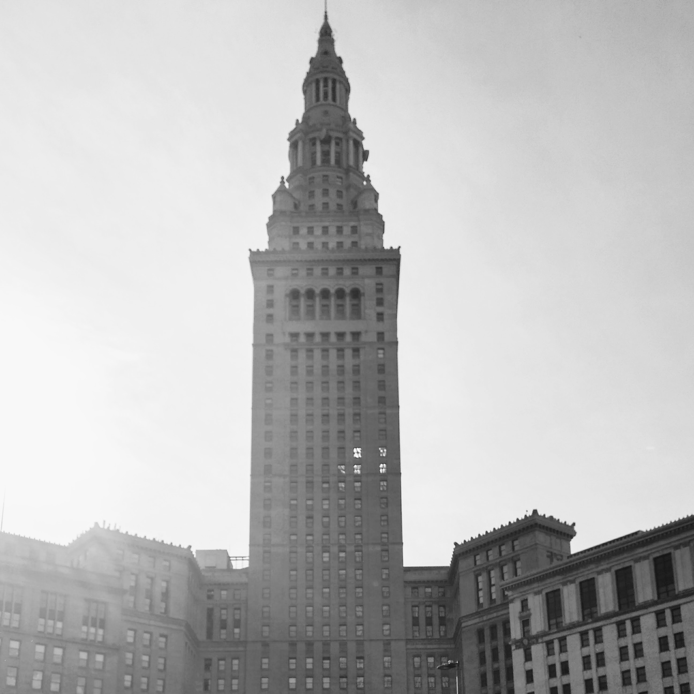

Cleveland was named after General Moses Cleaveland, an investor in the Connecticut Land Company, who founded Cleveland as the Connecticut Western Reserve's first settlement. Due to a spelling error, the city has always been known as "Cleveland" rather than "Cleaveland." Cleveland became the seat of Cuyahoga County in 1807, with a population of fifty-seven residents.
After 1812, Cleveland's population grew significantly as Cleveland became a market town. Later, as transportation evolved, so did Cleveland's growth. The Erie Canal and Steamboats allowed for greater mobility and quicker trade.
As time went on, Cleveland became a social and cultural leader in Northeast Ohio. Around the turn of the twentieth century, many developments led to Cleveland's rise, including the opening of Euclid Beach Park, the advent of the Cleveland Blues (later renamed the Cleveland Indians), and the Cleveland Museum of Art & Cleveland Orchestra were founded.
Cleveland reached peak population in the 1950s at approximately one million people but has steadily declined since.
In 1969, the Cuyahoga River caught fire, spurring an environmental movement that led to numerous new regulations, including the Clean Water Act.
Cleveland has also struggled with race relations and desegregation.
In the past two to three decades, however, Cleveland has turned around and celebrated numerous victories, including cleaner water, winning sports teams, and importance as an economic and cultural center of the Midwest.